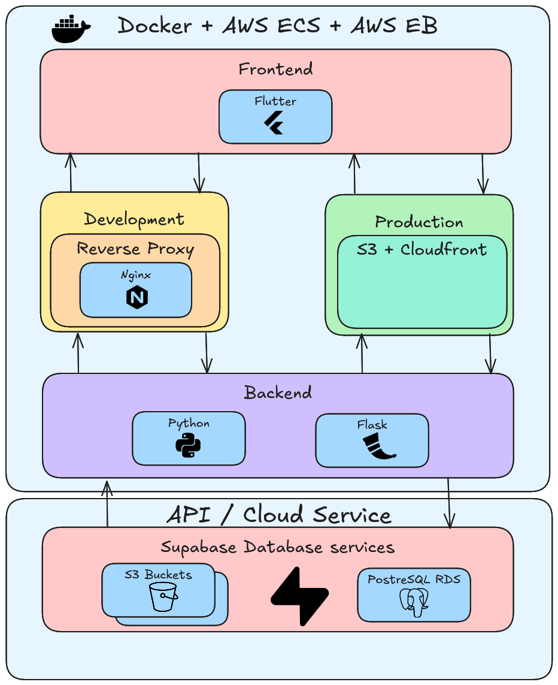
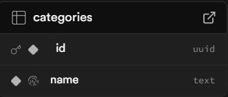
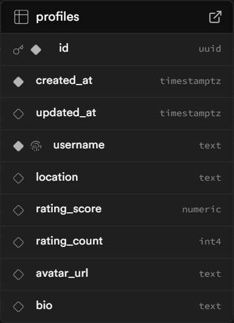
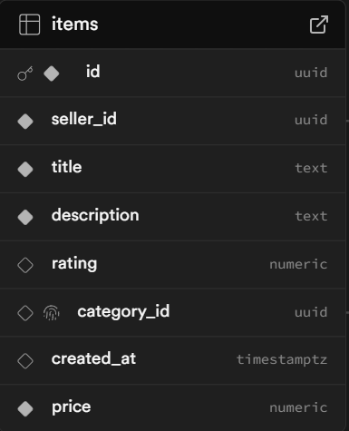
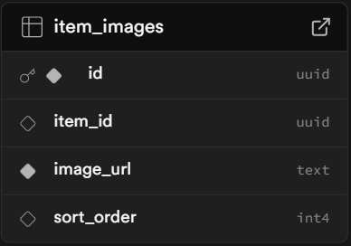

Secondhand Marketplace Handover¶
Contents¶
- Secondhand Marketplace Handover
- Contents
- Introduction
- Project Setup
- System Architecture
- API Overview
- Project Structure
- Testing
- Limitations
Introduction¶
This document is designed to give detailed information on certain aspects of the project: If a new developer were to begin working on it.
The majority of need-to-know, high-level information will be outlined within this document, with more fine grain details being outlined within code comments left throughout the projects codebase.
Tech Stack¶
- Frontend: Flutter
- Backend/API: Flask (Python)
- Database: Supabase (PostgreSQL)
- Cloud Hosting & Deployment: AWS
- Infrastructure & CI/CD: Docker, GitHub Actions
Project Setup¶
Prerequisite Downloads¶
- Python 3.xx (currently 3.16)
- Flutter
- Docker
Of course you also need to clone the repository:
- Using HTTPS URL:
-
git clone https://github.com/spe-uob/2025-SecondhandMarketplace.git -
Using SSH:
git clone git@github.com:spe-uob/2025-SecondhandMarketplace.git
Setup Development Environment¶
In order for the project to run, these constants must be declared within a .env file in the root directory
SUPABASE_URL= "..." # Supabase project URL, used to connect to the Supabase instance.
SUPABASE_KEY= "..." # Supabase API service role key with elevated privileges
[!WARNING]
SUPABASE_KEYmust never be exposed in client-side code or commited to the repository. Ensure.envfile is ignored by github[!NOTE]
Set
SUPABASE_URLto be the url of your supabase project 1Set
SUPABASE_KEYto be the Supabaseservice_rolekey 2Frontend does not use any
.envvariables[!TIP] variable assignment template held in the
.env.templatewithin the root of the projectComments within the template tell you what to assign each variable to!
Backend environment¶
[!WARNING]
It is highly recommended that if you are running backend and frontend manually - that you run the backend first
Running the Frontend first is fine for testing UI, however may break functionality
Initialise virtual environment¶
On a Unix based OS (Linux, MacOS, ...):
python3 -m venv venv # Create a virtual environment
source venv/bin/activate # Start up the virtual environment
On Windows:
python -m venv venv # Create a virtual environment
Set-ExecutionPolicy -ExecutionPolicy RemoteSigned -Scope Process # Allows locally created scripts to run
venv/Scripts/Activate.ps1 # Start up the virtual environment
Install dependancies¶
pip install -r backend/requirements.txt # Install dependencies
Running using Python¶
python backend/run.py # Run the backend server
[!NOTE]
The virtual environment and dependencies only need to be set up once
They can be used henceforth, unless dependencies are updated
If that is the case simply run
pip install -r backend/requirements.txtagain
Frontend environment¶
Enter the frontend root
cd application # Navigate to the frontend directory
Install dependencies
flutter pub get # Install required packages
[!NOTE]
Only necessary to run once, or after any project updates /
flutter cleancommandsmake sure to run
flutter doctorto make sure you arent missing any toolchains
Running using Flutter
make sure you are in the application folder when running this command:
flutter run # Run flutter frontend server
you will be prompted to press a key to run on a certain emulator/environment - alternatively use:
flutter run -d [environment name - e.g: chrome]
Docker Full Stack Setup¶
[!NOTE]
This approach should only be ran when in a non-production environment
The primary usage is when you want an image that you can repeatedly run for testing purposes
Running the application
docker compose up --build # Builds the projects in a docker container, then launches it
[!TIP]
Container can then be ran within docker desktop (or alternative) for quick access
Accessing URLS
- Frontend: http://localhost:8080
- Backend API: http://localhost:5000
(Optional) MKdocs documentation server¶
If you want to keep documentation up to date, it is recommended to change the projects' GitHub Pages server to keep everything adequately documented
Key configurations
under mkdocs.yml:
site_name: Holds the name of the projectrepo_url: Links to Projects GitHub repositorymarkdown_extensions: Holds any markdown extensions you want addednav: Holds the documentation table of contents structure
Running docs server
[!NOTE]
This shows how to run on a non-production environment (within the backends virtual environment)
The site is automatically updated when pushing to
dev/mainusing Actions
mkdocs serve
Accessing docs URL
found at http://localhost:8000
Adding new docs
- Create new
.mdfile under/docs - Add entry to
nav:inmkdocs.yml
System Architecture¶
Here is our final architecture diagram for the system

The frontend is developed in Flutter (Dart) and communicates with Flask backend via HTTP requests. The backend provides RESTful API endpoints to handle application logic and data operations.
Data storage and authentication (partially implemented) are managed by Supabase which provides a PostgreSQL database. Everything is containerised using Docker to ensure consistency across environments.
GitHub Actions manage continuous integrations (CI) and continuous deployment (CD).
In development, a reverse proxy (Nginx) is used to route requests between the frontend and backend services.
In production, the frontend is deployed as a static site on an AWS S3 bucket and delivered by CloudFront to improve performance. The backend is deployed on AWS by ECS or Elastic Beanstalk (depending on the environment).
In short, AWS is responsible for hosting and deployment of the application, whereas Supabase provides database and authentication services.
API Overview¶
The backend exposes RESTful API used by the Flutter frontend to manage user data, item listings, and gamification features. The API is implemented in Flask and communicates with Supabase to store and query data.
Base URL¶
The frontend uses a configurable base URL defined in app_config.dart
The value is resolved by this logic and order:
- If provided via
--dart-define=API_BASE_URL, that value is used. - In local development (web or mobile), the default is:
http://localhost:5000/api - In deployed web environments, a relative path is used (relies on a proxy):
/api
Authentication¶
Authentication is only partially implemented
- Backend routes currently use hardcoded user IDs or mock data
- Supabase has been choosen to provide authentication, but is not yet enforced across endpoints
Main Endpoints¶
/auth/routes for authentication (login, sign-up)/statusfor checking backend connectivity/itemsfor retrieving items for listings/profile/<user_id>and/mefor user profile retrieval and updates/reviewsfor user review retrieval/levelsand/me/xpfor gamification (level and XP progression)
Current Implementation Notes¶
- Responses return JSON with a
status_codefield and eitherdata,table_data, ormessage - Some routes currently return mock data rather than actual data from the database (e.g.
/reviews)
Database Overview¶
The project uses Supabase as its backend database service. Supabase provides a PostgreSQL database used to store data, including user profiles, listed items as well as item images.
The database structure is documented in more detail here
Tables¶
categories¶

- stores item categories used to group similar items together
- category functionality is not implemented at in the application at current stage
profiles¶

- stores user information such as username, location, rating, and level
- this table is separate from the Supabase Auth users table
levelandxpare always updated in real time for gamification purposes, they are stored separately
items¶

- stores marketplace listings, including seller, title, description, and price
- each item is assigned to a seller via
seller_id(foreign key)
item_images¶

- stores images of items along with
sort_orderwhich controls the relation of images
Table Relationships¶
The database follows these relationships:
- A profile can own many items
- An item belongs to one profile through seller_id
- An item belongs to one category through category_id
- An item can have many item_images
- An item_image belongs to one item through item_id
Storage¶
Images are stored in Supabase storage as the corresponding file URLs rather than the actual image files - avatars (profile pictures) are stored in the avatars bucket - item images are stored in the item_images bucket
Authentication¶
Supabase Auth is used for user authentication for managing user sign-up and login
Each authenticated user has:
- id (UID) - unique identifier for the authenticated user
- email - user email address
- created_at - account creation timestamp
- last_sign_in_at - timestamp of the user's last login, if available
- provider - authentication method (currently Email)
[!WARNING]
Authenticated users are not directly linked to the entries in
profilestable (their primary keys differ)This relationship must be considered when extending the backend authentication functionality
[!NOTE]
When modifying the database: - ensure any changes are reflected in backend queries and models - update the schema documentation file accordingly - verify that foreign key relationships remain valid - ensure any storage bucket references remain consistent with the frontend and backend
Project Structure¶
.
├── .github
├── application # Flutter frontend
├── backend # Python Flask backend
├── docs # Project docs
├── *root files* # Configuration files in the root
./.github¶
.
├── ISSUE_TEMPLATE/ # GitHub Issues templates
│ ├── ...
├── workflows/ # Workflow files
│ ├── ...
└── pull_request_template.md # GitHub PR template
./.github/ISSUE_TEMPLATE¶
Currently contains templates for bug reports and general tasks, allows users to fill out the template when starting a new issue.
./.github/workflows¶
Contains CI and CD workflows, that triggers certain GitHub actions events
./workflows/backend-cd.yml: Triggers on pushes todev, deploys the backend to AWS Elastic Beanstalk. Packages the Flask app, Uploading it to S3, updating the environment then verifying the health afterwards./workflows/deploy-web.yml: Triggers on pushes todev, builds the Flutter web app, syncs the release to S3, invalidates CloudFront and then check the deployed site successfully responds./workflows/flask-ci.yml: Triggers on changes made to./backendon pushes / pull requests / manual runs. runs the backend CI - including formatting, linting, and generating pytest coverage./workflows/flutter-ci.yml: Triggers on changes made to./applicationon pushes / pull requests / manual runs. runs the frontend CI - fetching dependencies, runningflutter analyzeand executing the test suite../workflows/mkdocs-cd.yml: Triggers whendevormainis updated, publishes the project documentation site to GitHub Pages./workflows/pr-formatting-ci.yml: Triggers when a pull request is made todev, enforces PR hygiene by checking title format, requiring a close tag, and ensuring a change type is selected
./application¶
.
├──lib/
| ├── auth/ # Auth flow components
| │ └── ..
| ├── config/ # Centralised app congiguration
| │ └── ...
| ├── models/ # Structured data models
| │ └── ...
| ├── pages/ # Contains flutter web pages
| │ └── ...
| ├── services/ # Contains generic application service functions
| │ └── ...
| └── widgets/ # Contains reusable flutter widgets
| └──...
├── test/ # Frontend test suite
| ├── ...
└── ...
- ./application/lib/auth/.
- ./application/lib/config/.
- ./application/lib/models/.
- ./application/lib/pages/.
- ./application/lib/services/.
- ./application/lib/widgets/.
- ./application/lib/.
- ./application/test/.
- ./application/.
./application/lib/auth/.¶
Handles the authentication flow and access. The intention is to decide whether certain users could access protected pages for be directed to the login/signup screen.
./application/lib/config/.¶
Stores global app configuration across the frontend, currently holds environment based settings such as the API base URL resolution
./application/lib/models/.¶
Serialization and deserialization between JSON packed variables and a structured data model defined within each corresponding file, matching the information required by widgets.
item_model- Contains item attributesuser_model- Contains user profile attributes
./application/lib/pages/.¶
Contains frontend page-level screens
Listed are notable pages:
home_page.dart: Page that contains a grid of user uploaded itemsitem_detail_page.dart: Page that shows information for a single itempost_items_page.dart: Page that allows users to upload their own itemprofile_page.dart: Page that shows information for a single user
./application/lib/services/.¶
Holds service-layer logic that allows communication with the backend and holds usable operations. This abstracts networking away from the page widgets so UI stays cleaner
./application/lib/widgets/.¶
Contaains reuable UI components that can be shared by multiple pages. Enforces DRY principles and keeps styling consistent.
Listed are notable widgets:
header.dart: Header with navigation elements displayed on the top of most pagesitem_widget.dart: Format that item information is displayed on the home and profile pagesupload_image.dart: Used to upload images and handle them within a pageuser_widget: Format that user information is displayed in the item widget
./application/lib/.¶
Primary Flutter source directory containing the apps core code
main.dart: Frontend entry point, booting up the Flutter app and initialising app configuration.
./application/test/.¶
Frontend test suite for widgets, models and services. They simply make sure that user facing operations behave as expected. Unit tests, integration tests, and widget tests.
./application/.¶
nginx.conf: Defines Nginx proxy rules to serve the web build and route requestsDockerfile: Defines how the frontend container is builtpubspec.yaml: Declares dependencies, assets and metadataanalysis_options.yaml: configures analysis and linting rules
./backend¶
.
├── app/ # Backend application package
│ ├── __init__.py # Flask app setup
│ ├── services.py # Shared backend service logic
│ └── routes/ # API route modules
│ ├── __init__.py # Exports route blueprints
│ ├── auth.py # Authentication endpoints
│ ├── users.py # User profile endpoints
│ ├── items.py # Item endpoints
│ ├── reviews.py # Review endpoints
│ ├── gamification.py # Level progression endpoints
│ └── health.py # Health/status endpoint(s)
├── test/ # Backend test suite
│ └── ...
└── ...
./backend/app/routes/.¶
This directory contains main python scripts for setting up endpoints that can interact with the frontend - utilising flask routing patterns.
__init__.py: Exports route blueprints to attatch to the appauth.py: API endpoints relating to authenticationusers.py: API endpoints for user profile reads and updatesitems.py: API endpoints for item listings and managementreviews.py: API endpoints for reviews and ratingsgamification.py: API endpoints for level progressionhealth.py: API endpoints for connectivity checks
./backend/app/.¶
This directory contains files that pertain to the primary functionality of the backend, and how it interacts with the frontend.
__init__.py: Configures the flask application, wires the core backend setupservices.py: Holds shared service logic used by route handlers
./backend/test/.¶
Contains tests for various scripts within the app/ folder, primarily for the routing patterns
test_{route_filename}.py: Route-specific tests for each file inroutes/conftest.py: Shared pytest fixtures, establishes common test configuration
./backend/.¶
Dockerfile: Defines how the backend container is builtrequirements.txt: Python dependencies for the backend environmentrun.py: Local entry script used to start the backend server
./docs¶
.
├── AI_usage/
│ └── Ai_info.md
├── assets/ # Contains images locally, used for documentation
│ └── ...
├── aws/ # Docs for deployment
│ └── ...
├── database-structure/
│ └── database_structure.md # Docs about Supabase structure
├── handover/
│ └── handover.md # Docs for handover
├── naming_conventions/
│ └── naming_conventions.md # Docs for GitHub naming conventions
├── project-setup/
│ └── project_setup.md # Docs for developer initial setup
├── user-instructions/
│ └── user_instructions.md # Docs for user guide
├── workflows/
│ └── ci-cd.md # Docs for GitHub Actions workflows
├── requirements.txt # Establish dependencies for serving web docs
├── index.md # Entry page for served docs
└── ...
./root files¶
The following files are from the root directory:
.env.template: A template to copy and paste the variables required for.env.gitignore: Patterns that indicate files to be ignored by gitdocker-compose.yml: Congfiguration service for building the full stack of the projectmkdocs.yml: configuration for the documentation siteREADME.md: contains a general overview of the project
Testing¶
Backend Testing¶
Navigate to the backend directory and run it in the python virtual environment:
cd backend
Run all tests:
pytest -v --cov=app --cov-report=term-missing test/
- runs all tests in
test/ - shows each test result
- reports coverage for
app(which contains all backend logic)
Run specific test file:
pytest -v test/test_items.py
Run a single test:
pytest -v test/test_health.py::test_get_status
All tests are automatically run on every push thanks to the flask-ci.yml CI workflow
Test Coverage¶
For backend test coverage, from the backend/ directory with the Python virtual environment activated, run:
pytest --cov=app --cov-report=term-missing test/
This runs all backend tests and prints the overall coverage summary in the terminal, including any missing lines
To generate an interactive and more detailed HTML report, run:
pytest --cov=app --cov-report=html test/
Then open htmlcov/index.html in a browser
[!WARNING]
Make sure that the Python virtual environment is activated before running test commands and that you are in the
backend/directory
Frontend Testing¶
Navigate to the frontend directory:
cd application
Run all tests:
flutter test
Run specific test file:
flutter test test/post_items_page_test.dart
All tests are automatically run on every push thanks to the flutter-ci.yml CI workflow
Test Coverage¶
To get the frontend test coverage, run the following from application/:
flutter test --coverage
This generates coverage/lcov.info which contains the frontend test coverage data
To view the coverage in an interactive HTML report, run:
genhtml coverage/lcov.info -o coverage/html
Then open coverage/html/index.html in a browser
Alternatively view the overall summary in the terminal by running:
lcov --summary coverage/lcov.info
[!NOTE]
lcov is easy to install on Mac and Linux
- Mac:
brew install lcov- Linux:
sudo apt-get install lcovHowever when it comes to Windows, we suggest using WSL If
genhtmlfails due to Windows-style file paths inlcov.info, convert backslashes to forward slashes first:sed -i 's|\\|/|g' coverage/lcov.infothen rerun the command for HTML
Limitations¶
Backend¶
- Authentication is incomplete: missing login endpoint, token validation, email verification, and automatic profile creation on registration
- Posting an item is tied to a hard-coded testing user, rather than a logged in user (incomplete authentication)
- User information about "Posting for X months" not implemented
Frontend¶
- Test coverage is limited, primarily focused on widgets and models, with less coverage of full user flows and integration
General¶
- Favourites and Messaging page are not implemented
- Reviews and ratings are hard-coded in the frontend, but the fitting API endpoints are present in the backend